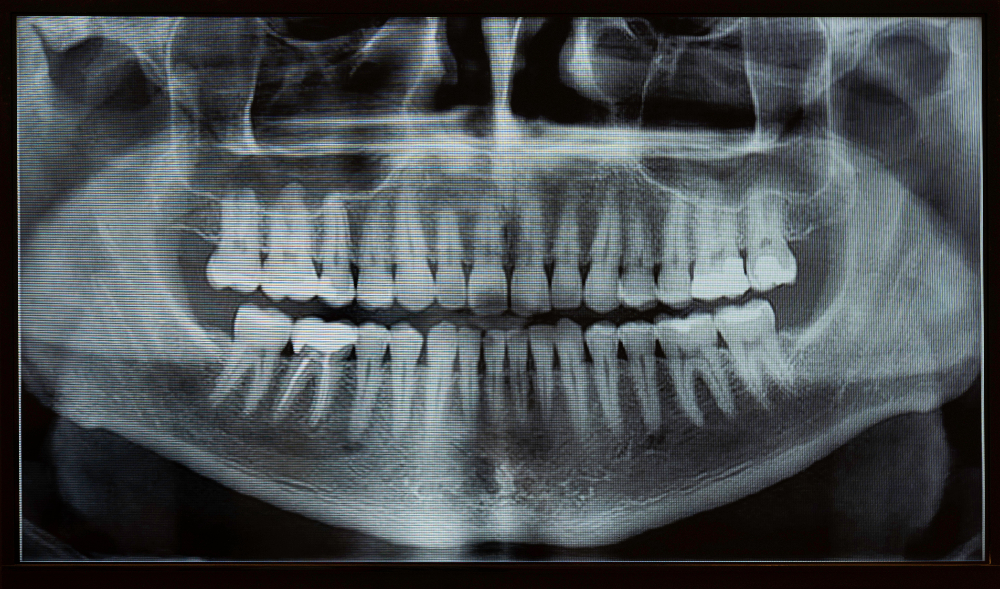

Full Range of Dental Services
At 100SMILES Dental Care, we understand the diverse needs of our patients. Our experienced team offers preventive, restorative, and cosmetic treatments, using the latest technologies to provide high-quality care.
- Routine wellness check-ups and cleanings
- Dental implants and dentures
- Cosmetic dentistry (teeth whitening, veneers)
- Orthodontics and Invisalign
- Root canal treatment
- Full diagnostics including digital X-rays
- Oral hygiene education and nutritional guidance
- Pediatric dental care
- Emergency dental treatment

Our New Dental Technologies
1. Digital X-Rays

Our state-of-the-art digital X-ray system provides high-resolution images with significantly less radiation exposure compared to traditional X-rays. This technology allows for quicker and more accurate diagnoses.
2. Intraoral Cameras

Our intraoral cameras offer a detailed view of your mouth, allowing us to capture high-quality images of your teeth and gums. This enhances our ability to detect problems early and helps us better explain treatment options.
3. Laser Dentistry

We have incorporated advanced laser technology into our practice, which allows for minimally invasive procedures with reduced pain and faster healing times. Used for gum disease therapy, cavity detection, and teeth whitening.
4. CAD/CAM Technology

Our CAD/CAM (Computer-Aided Design and Manufacturing) system enables us to create precise and custom dental restorations (crowns, bridges, veneers) in a **single visit**, ensuring a perfect fit and natural appearance.
5. 3D Printing

We utilize 3D printing technology to create accurate dental models, surgical guides, and custom appliances. This innovation allows for more precise treatment planning and improved outcomes for our patients.
6. Teledentistry

Our teledentistry services provide convenient access to dental care from the comfort of your home. Through virtual consultations, we can assess your concerns and develop treatment plans without an immediate in-office visit.
Annual Dental Check-Up Package *
10% OFF until April 30!
- Physical Examination: thorough analysis of overall oral health.
- Professional Cleanings: removal of plaque and tartar.
- X-Rays: preventive assessment of dental issues.
- Dental Check-Up: early detection of dental disease with personalised advice.
- Nutritional Guidance: diet and health recommendations.
- Lab Work (if needed): additional tests based on dental history or health concerns.
 Book Your Annual Check-Up
Book Your Annual Check-Up
Free Dental Check-Up Event
Join us on Saturday, 5th July from 9am for your FREE dental check-up at 100SMILES Dental Care.
How to book your free checkup:
- Call us at 07 1327 5599
- Email: admin@100smilesdentalcare.com.au
- Visit: 195 Fantail Street, Cairnville, QLD